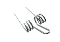

Пружины для сельхозтехники
Изготовление сельскохозяйственных пружин на заказ партиями от 1-й штуки от 1-го дня.
Выполним по разнообразным параметрам, чертежам или образцу, фото, эскизу.
(сроки выполнения заказа обговариваются с каждым клиентом индивидуально)
- 
Изготовление и производство сельскохозяйственных пружин
Производственная компания ООО "Индустриал Спрингс" изготавливает и реализует пружины для сельхозтехники по всей территории Украины. Мы принимает заказы на изготовление пружин, которые применяются в следующих узлах и агрегатах:
- - Пружинные бороны ЗБР, ЗПГ, БПН, БП, БПШ, БГО;
- - Бороны БДТ, БГР, БДШ, БДС, БДК;
- - Культиваторы КПК, КПП, КПШ, КПЕ, КПЭ, КПС, КСО, КТП, ККП, КГР, КПН;
- - Агрегаты предпосевные АП «Европак», агрегаты АГР;
- - Сельскохозяйственные пружины к технике производителей: Amazone, Rabe, Kverneland, Claas, Horsch, New Holland, Case, John Deere, Massey Furguson, Sampo;
- - Посевная техника: сеялки зерновые, зернотуковые, свекольные, бобовые, пропашные, универсальные, точного высева;
- - Техника для уборки и заготовки кормов;
- - Грабли-ворошилки, валкователи, валкообразователи, ворошители, грабли колесно-пальцевые ГВР-630/420/6Р, ГВК-6,0/3,0/3,2, ГВ, ГУР, ГВД, ГВВ, ГДС, ГР;
- - Подборщиках и жатках: «Дон», «Нива», ППТ, ПДЕ, ЖРБ, ЖВН, ЖВП, КСК, ЖВУ, ПБ, ЖБВ, КИС, Е-302-304, ЖЗНД, ПКРБ;
- - Тракторная группа Т-150, ДТ-75, Т-70, МТЗ, ЮМЗ, Т-25, Т-16, Т-40, К-700;
- - Пресс-подборщики: ППР, ПРФ, ППТ, ПРЛ, МВР, ПРМ, ПТР, ПВР, ПВИ, Киргизстан.
У нашего предприятия можно заказать и купить пружины для сельхозтехники от 1 штуки или крупными и мелкооптовыми партиями. При оформлении заявки на расчет и изготовление сельскохозяйственных пружин необходимо проконсультироваться с нашими специалистами, для точного составления технического задания к Вашему заказу, в котором будут учтены все необходимые параметры. Для заказа и ознакомления с прайсом свяжитесь с мененджером нашей компании через форму заявки или по одному из телефонов: 066 283 80 82, 097 305 81 85, 0532 591 590.